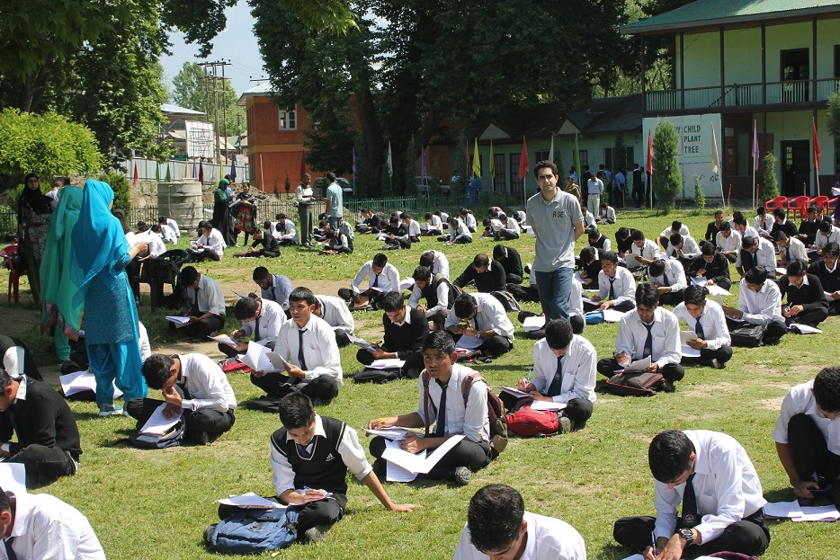
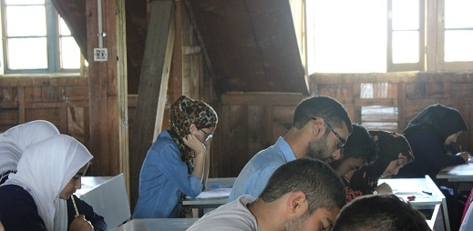
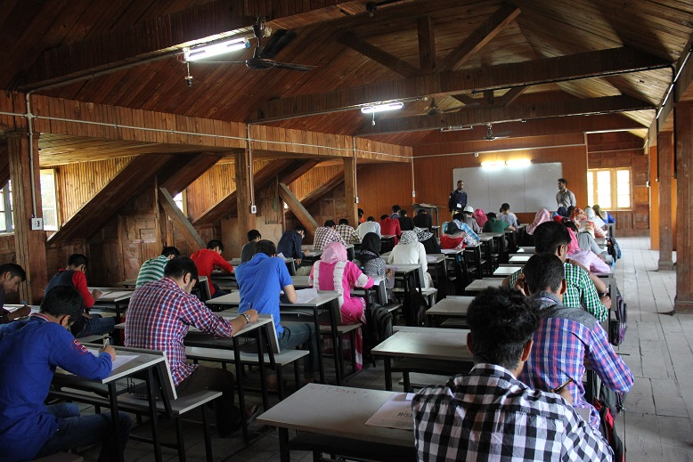
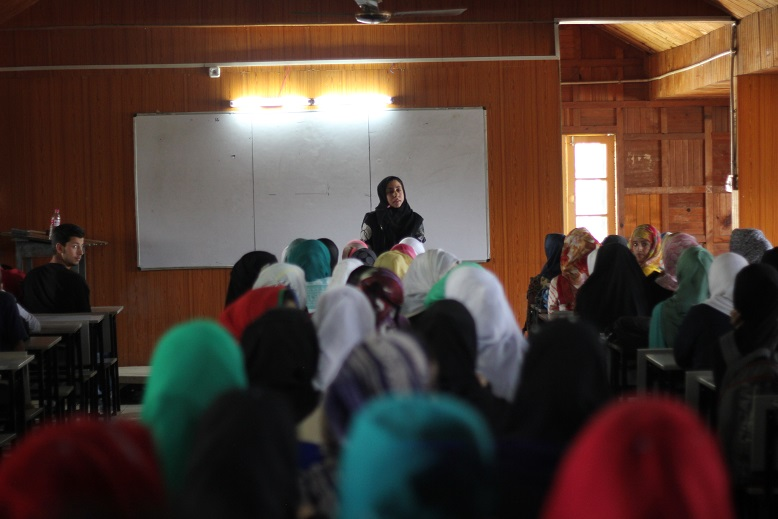

Introducing RISE Fellowship : Through the lens of fellows
What is the purpose of education? Is it to create knowledge, to think and learn or to discover our inner callings? There is no consensus. However, there is consensus that the education system in Kashmir has been held captive by the same stagnant four-walled classroom practices, where a teacher continues to add bricks to the same impenetrable wall, with minimal student participation. It is not that students are reluctant to participate; instead we are not ready to conform to a better system of education. For decades, our education system stands dominated by traditionalism. The career opportunities that beckon us are being constantly trimmed into medical sciences, engineering and civil services by short-sighted approach of education, fueling the rat race between the students. Consequently, this approach has left untouched many facets of education which otherwise are essential for overall development of a student.
While working with students in Kashmir, RISE observed that despite their potential the students here fail to realize their capabilities because of the lack of authenticity and inclusiveness in the system. The challenges that education in Kashmir faces are structural which include broadening its scope, acquainting children with the wider world and opportunities thereby, making the effective use of technology and above all translating education into overall development of a student. In pursuit of achieving such objectives, RISE started this experimental fellowship program, whose prime objective is to provide a platform to youth in order to bring about some desired changes.
Some 500 candidates applied for the fellowship out of which 8 were finally selected. This was followed by a rigorous two-week long training program where fellows were made to reflect over the gravity of the task ahead. There were sessions about how to hone leadership, listening, speaking, and thinking abilities of students; there were sessions about how to get to know the students and how to keep them motivated and guide them through different career avenues. During the brainstorming sessions fellows would come up with their own ideas, which would then be discussed and debated in context of Kashmir.
However, the highlights of the training program were two interactive sessions with Mr. Raheel Khursheed and Mrs. Nighat Pandit. Raheel by being a fellow at Universities like Harvard, Stanford and Yale enlightened the fellows with his cosmopolitan wisdom. And in another session, HELP Foundation chairperson, Nighat Pandit shed light on the function of education in healing the deep wounds of children of the conflict in Kashmir.
On 17th of November, the fellows left Srinagar for Sopore to kick start this much-needed revamping process. The schools selected include SRM Welkin and Guru Educational Trust. The first week’s functioning focused on plethora of activities aimed at making students expressive and fearless, which consequently made classes more interactive. And then, the classes started with making students reflect on the value and applicability of different subjects. Now, their approach towards every subject seems positive.
RISE is going to run a similar program in association with HELP foundation in Indrahama. Some students there hail from underprivileged backgrounds; some of them are differently abled, while others are first hand victims of conflict. So, the challenge there is not just about making students realize their respective dreams but also to give them a ray of hope and a reason to live.
The way this program is running now suggests that the scale of change that RISE fellowship will bring about after six months will be unimaginable. With hearty responses, both from students and their parents, we at RISE feel immense pride for doing what we do, and we hope that our way of educating children soon becomes a reality in entire Kashmir.

Talent Search
In the second half of the year 2014, team RISE envisioned a talent hunt activity to be conducted across the Kashmir region. The aim was to identify talented students, counsel them, connect them to experts of their fields of interest, and hence, encourage and facilitate them towards achieving their aims and ambitions. Given the education scenario is Kashmir, which is currently a mess, where even the brightest of students are not expected to chase excellence, instead are expected to settle for mediocrity, such an activity was need of the hour.
Due to the bureaucratic delay of getting the requisite permissions and the unfortunate floods in September 2014, we were unable to conduct the talent hunt last year.
The difficult yet encouring start
Beyond the permissions, there wasn't any kind of support from the state government or the education department. This made approaching district educational officers very difficult. We realized that conducting such an examination without any organisational support from the government would involve huge costs, so we started looking for sponsors. Since we couldn't afford any further delays, we started with Rise Talent Search Examination(RTSE), while the search for a sponsor was still on. We conducted the first test at two Higher Secondary schools of Ganderbal District on May 16th. In this activity approximately 800 students of Classes 10, 11 & 12 participated. The test was a simple MCQ type, 1 hour and did not involve any costs for students or the schools.
Given that the activity was the first of its kind to be conducted in Kashmir, it received prominent coverage in the print media. The efficacy with which the activity was conducted also helped us convince J&K Bank, whom we were in talks with, to sponsor the entire operational costs of the Talent search examination.
"Conducting the first test was very important for us. It helped us in securing the sponsorship. It gave us a sense of direction on how to approach schools and/or educational officers in other districts. And more importantly, it gave us a belief that, no matter how difficult, conducting the talent search examination for the entire Kashmir region, on our own, wasn't impossible" - Imbesat, Co-Founder at RISE

"To be honest, our initial target was to just cross 10,000 students. With time, every school we visited, we were able to identify bright talented students, who were ambitious but lacked any proper guidance. This motivated us to target more and more schools, so that we could identify as many talented students as possible and provide them with the necessary support/mentorship. This was the primary driving force and the reason for us to surpass our own target of 10,000 and touch 15,000" - Mubeen Masudi, Co-Founder at RiSE.
The Interim Counseling Sessions
As the results started coming in, we were pleasantly surprised to see some exceptional performances. The original plan was to conduct counselling sessions for all the identified talented students post the completion of RTSE, but we decided to conduct a few counseling sessions for the class 11/12 science students whom we had already identified.
These sessions were conducted by JK-CET (Medical Entrance) Topper and IITians. Students also got to interact with alumni of RISE who had recently made it to prestigious engineering colleges of India.
"Attending this session was very beneficial. I was able to seek answers to various queries I had. I was also advised on the best strategies to follow while preparing for entrance examinations. Additionally, I was also made aware of the benefits and challenges of a career in Medicine " - Uroosa Gazi, student of Kothi Bagh school
Based on the results tabulated, we were able to identify over 700 talented students from all over Kashmir of class 10, 11 & 12. These students belong to Humanities, Commerce, Medical and Non-medical streams. Subsequently, these students were invited to participate in the Level-2 of RTSE and attend the counseling sessions by experts.

The Interim Counseling Sessions
As the results started coming in, we were pleasantly surprised to see some exceptional performances. The original plan was to conduct counselling sessions for all the identified talented students post the completion of RTSE, but we decided to conduct a few counseling sessions for the class 11/12 science students whom we had already identified.
These sessions were conducted by JK-CET (Medical Entrance) Topper and IITians. Students also got to interact with alumni of RISE who had recently made it to prestigious engineering colleges of India.
"Attending this session was very beneficial. I was able to seek answers to various queries I had. I was also advised on the best strategies to follow while preparing for entrance examinations. Additionally, I was also made aware of the benefits and challenges of a career in Medicine " - Uroosa Gazi, student of Kothi Bagh school

- Mr. Umar Rauf, IIT Roorkee alumnus - For Civil Service Aspirants and general counseling for Class 10 students
- Mr. Imbesat Ahmad, IIT Kharagpur Alumnus - for engineering aspirants
- Ms. Sahiba Maqbool, L. L. B.- for humanities students.
- Mr. Mubeen Masudi, IIT Bombay Alumnus - for engineering aspirants.
"I am really thankful to RISE for showing me the correct path that I should follow in order to achieve something big in life. The session on IIT was very helpful, I was made aware of the strategies I should follow, books I should read from and even the way I should plan my studies" - Reshi Aasif, student of Boys Hr. Sec, Sopore
The toppers of Level-2 of RTSE will be felicitated on October 11th by J&K Bank at their Corporate headquarters in Srinagar.
"The aim of these sessions was to make students aware of the kind of educational opportunities that lie ahead of them. These are certainly very talented students, but what they lack is awareness and guidance. Through these sessions we have taken care of the awareness part, now we are working on building a team of mentors and developing educational resources which would ensure a more sustained guidance being provided to these students in the pursuit of their aims and ambitions" - Imbesat
The Next Steps
We are working towards developing a more sustained mentorship programme for the identified talented students.
Given the success and expertise of RISE in JEE coaching, we plan to offer our coaching programme to the identified students of the non medical stream. We really hope that due to the combination of their talent & hardwork and the guidance these students receive from us, they are able to secure admissions to the prestigious engineering colleges of India, like, IITs, NITs, etc. We are still working on finding sponsors/donors for this activity, as the students we would cater to through this programme have minimal or no affordability. We are hopeful that we will be able to conduct this coaching programme for the identified talented students because if RTSE has taught us anything it has to be that nothing is impossible as long as you have the grit and determination to work towards it.
My take on decision making; where to take advice from; how to judge.
From classes 1 to 10th, you and your classmates had the same syllabus, with a maybe a few minor differences. But right after you finish your 10th, your further education splits into "streams", the three most popular being Science, Commerce and Arts. These streams are different not only in what they teach, but also in how they teach it. As a student who has just given his 10th examinations, you are expected to choose one of these streams.
This is the first in a series of important decisions that will shape your career and all other aspects of your life from now onwards. As daunting as that may sound, making a good decision is not hard. Yet, many people do get misled, and surprisingly many get it completely wrong. Over the years, through my own mistakes and achievements I've put together a small list of guidelines that might help you through this and other decisions.
First, realize that you are constantly evolving, and so are your interests and hobbies. In 5 to 6 years, you will be a very different person from what you are today. Not only does graduate education ensure this change, it is the fundamental reason for going to college.
So how do you choose something that you like, and the person you will be 5 years from now likes too? The answer is in not looking for things that you like, but for qualities that you identify with. Divide a piece of paper into two columns and on one side write down all the things you know you like. For me, this list included reading mystery novels, solving math puzzles, doing the crossword and programming. Look for patterns that emerge from this list. In my case, it was clear to me that logic & problem-solving were my interests. Do the same for things you dislike. Based on this exercise figure out what you would really like to, and hence, want to do in your life
Once you know what you want, the next step is to research your options, to see which one fits your criteria the best. Remember, money and fame should ideally not be the overriding criterion. You need to ensure that your interests and skill-sets align with the option you chose. It's also helpful to envision and ensure in the long term your personality characteristics line up well with the option you chose.
Next step is to gather more information about the option(s) you have chosen. According to me the best method here is to reach out to the relevant people. Reach out to people who you think made similar decisions at some point of time in their life. Ask them what prompted their decisions, and more importantly, what are the positives and the negatives, if any, of the career they are pursuing as a result. Try listening to these opinions and formulate an unbiased opinion of your own. You should also try to read about the option you have chosen on online forums, educational sections of newspapers and/or magazines. At the end of the day, based on the information gathered through your research and the opinion formulated, take a firm decision.
It's usually helpful to have a Plan B. So never dismiss all your options, try having an option or two available just in case the original plan does not work out.
On a closing note I would like to add that as important as these decisions are, they are still not the end of the world. As long as you have your health, copious amounts of dedication and a little bit of hope, you'll manage to get through anything. So remember, Don't Panic.
This year, our student, Aqsa Rouf, became one of the very few Kashmiris to have secured an admission to B. A. (Hons), Economics course at St. Stephen's, New Delhi. She also bagged the 3rd position in the class 12th JK Board examinations. She had appeared for JEE Mains, and as a result was able to secure admission to NIT Srinagar. Currently she is pursuing Electrical Engineering from NIT Srinagar.
Given her incredible feat, we decided to ask her a few questions about her achievements. We also requested her to share her perspective on the current education scenario in Kashmir, especially for high school students. She also gave some valuable suggestions for class 11/12 students preparing for various examinations.
Q: What, according to you, is the key to success?
A: The sole key to success is hardwork. It is perserverence and determination to achieve something which pushes you and makes you come out with flying colors.
Factors like appropriate guidance and constant encouragement are also very important, but they only matter if you are motivated and willling to work hard.
Q: You were able to secure admission to St. Stephen's. How did that come about?
A: To be honest, neither was I aware of the courses taught at St. Stephen's nor was I well-acquainted with the educational standards pertaining to this institute. It was my mentor, at RISE, Mr. Mubeen Masudi, who introduced to me these institutes and advised me to apply for courses offered there. Since my percentage in the board examinations was very good, I was shortlisted for the aptitude test and, subsequently, the interview.
I spoke to a few students of St. Stephen's through facebook, who advised me to brush up Current Affairs knowledge for the interview. I had no prior experience of personal interviews, so the faculty at RISE scheduled mock interviews for me. This helped me in preparing for the interview in the best possible manner and also developed confidence in me to crack the interview. I was very confident going into the interview, which was primarily due to me being well prepared for it.
Q: What are your suggestions to your juniors who aspire to secure admissions to St. Stephen's or similar institutes of DU?
A: As far as the admission to the institutes of DU is concerned, board percentage is of prime importance. However, if you aspire to study at St. Stephen's, you need to be a bit ahead of the curve. You should have good mental ability to crack the aptitude test. The aptitude test is followed by an interview which aims at testing your basic knowledge and understanding of the society, true aim in life, character as an individual, and more importantly, the potential and desire to achieve something in life.
Ensure that you ask yourself these questions, and frame clear and concise answers to the same. Work a lot on your communication skills
Based on my personal experience, the best way to prepare for an interview is through mock interviews.
Q: Students from Kashmir are not able to secure admissions to prestigious institutes of the country, and perform dismally in competitive examinations like JEE Mains or Adv. From a candidates perspective, what do you think are the primary reasons for the same?
A: The first and the foremost reason is improper planning. While the students from the rest of the country start their preparations immediately after secondary school examination, students in Kashmir are dubious about their goal even after class 12th. The most common and halfwitted decision made by students in class 11th is to opt for PCBM combination of subjects. This results in failure in most of the cases as the minds of students get biased and they ultimately leave their career stream to what exam they qualify. This could primarily be attributed to lack of counselling at an early stage.
The next very crucial factor is lack of proper coaching at higher secondary level. Most of the coaching centres that students join in class 11th aim to cover the syllabus prescribed by JKBOSE and hardly pay heed to the format of questions being asked in the national level competitive examinations.
Q: What steps should school authorities take to ensure that students perform well in competitive examinations?
A: School examinations, currently, revolve around the concept of mugging up and hence contribute nowhere in increasing and sharpening our mental skills, on the contrary, good mental ability is fundamental for cracking competitive examinations like JEE mains and advanced. Students are suddenly introduced to objective pattern questions specifically testing their understanding and application of concepts after class 12th which is quite traumatising for them.
The examinations held in schools need complete transformation in their pattern. They need to shift to a pattern which tests students understanding and application of concepts, instead of simply testing the knowledge
Q: What's your advice to class 11/12 students preparing for JEE?
A: I strongly advise them to focus keenly on their goal, work hard and keep away from all the distractions. They should make it a point to be consistent, revise whatever they are taught in class and practise questions on the topic.
Develop a habit of solving numericals at a fast speed. This can only be achieved by solving as many numericals, difficult and easy, as possible on a daily basis.
If one wants to do do well in JEE Mains and Advanced one has to study sincerely and consitently for 2 years after class 10.
Q: With board examinations just a month away in Kashmir, what things should students keep in their mind so as to ensure a good performance?
A: Proper understanding, detailed study and numerical analysis of each topic proved very fruitful for me in securing high marks in 12th boards. When the board exams are approaching, the best method is to sketch a proper plan and work accordingly. For Science students, I highly recommend to study physics or chemistry for 3/4 of the attributed time and maths for 1/4 of the attributed time, each day during the board examinations preparations.
Schedule time for relaxion as well. Don't schedule more than 16 hours of studying in a single day or isolate yourself from the surrondings; it only leads to more stress.
And most importantly, have faith in yourself, you will do well!
Q: You joined NIT Srinagar. What are your career goals after graduating from NIT Srinagar?
A: I will soon start preparing for the GRE examination so that I am able to apply for Masters in the area of my interest. Hopefully, in near future, I will be pursuing M. S. at one of the finest technical institutes of the world.